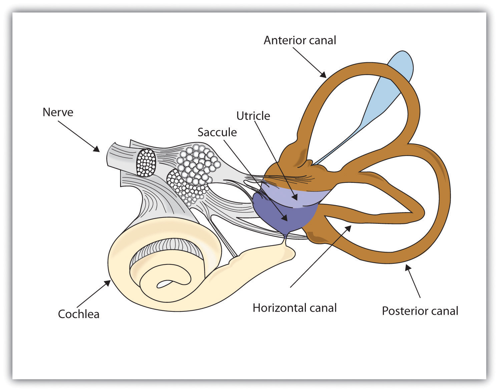

Although vision and hearing are by far the most important, human sensation is rounded out by four other senses, each of which provides an essential avenue to a better understanding of and response to the world around us. These other senses are touch, taste, smell, and our sense of body position and movement (proprioception).
Taste is important not only because it allows us to enjoy the food we eat, but even more crucial, because it leads us toward foods that provide energy (sugar, for instance) and away from foods that could be harmful. Many children are picky eaters for a reason—they are biologically predisposed to be very careful about what they eat. Together with the sense of smell, taste helps us maintain appetite, assess potential dangers (such as the odor of a gas leak or a burning house), and avoid eating poisonous or spoiled food.
Our ability to taste begins at the taste receptors on the tongue. The tongue detects six different taste sensations, known respectively as sweet, salty, sour, bitter, piquancy (spicy), and umami (savory). Umami is a meaty taste associated with meats, cheeses, soy, seaweed, and mushrooms, and particularly found in monosodium glutamate (MSG), a popular flavor enhancer (Ikeda, 1909/2002; Sugimoto & Ninomiya, 2005).Ikeda, K. (2002). [New seasonings]. Chemical Senses, 27(9), 847–849. Translated and shortened to 75% by Y. Ogiwara & Y. Ninomiya from the Journal of the Chemical Society of Tokyo, 30, 820–836. (Original work published 1909); Sugimoto, K., & Ninomiya, Y. (2005). Introductory remarks on umami research: Candidate receptors and signal transduction mechanisms on umami. Chemical Senses, 30(Suppl. 1), Pi21–i22.
Our tongues are covered with taste buds, which are designed to sense chemicals in the mouth. Most taste buds are located in the top outer edges of the tongue, but there are also receptors at the back of the tongue as well as on the walls of the mouth and at the back of the throat. As we chew food, it dissolves and enters the taste buds, triggering nerve impulses that are transmitted to the brain (Northcutt, 2004).Northcutt, R. G. (2004). Taste buds: Development and evolution. Brain, Behavior and Evolution, 64(3), 198–206. Human tongues are covered with 2,000 to 10,000 taste buds, and each bud contains between 50 and 100 taste receptor cells. Taste buds are activated very quickly; a salty or sweet taste that touches a taste bud for even one tenth of a second will trigger a neural impulse (Kelling & Halpern, 1983).Kelling, S. T., & Halpern, B. P. (1983). Taste flashes: Reaction times, intensity, and quality. Science, 219, 412–414. On average, taste buds live for about 5 days, after which new taste buds are created to replace them. As we get older, however, the rate of creation decreases making us less sensitive to taste. This change helps explain why some foods that seem so unpleasant in childhood are more enjoyable in adulthood.
The area of the sensory cortex that responds to taste is in a very similar location to the area that responds to smell, a fact that helps explain why the sense of smell also contributes to our experience of the things we eat. You may remember having had difficulty tasting food when you had a bad cold, and if you block your nose and taste slices of raw potato, apple, and parsnip, you will not be able to taste the differences between them. Our experience of texture in a food (the way we feel it on our tongues) also influences how we taste it.
As we breathe in air through our nostrils, we inhale airborne chemical molecules, which are detected by the 10 million to 20 million receptor cells embedded in the olfactory membrane of the upper nasal passage. The olfactory receptor cells are topped with tentacle-like protrusions that contain receptor proteins. When an odor receptor is stimulated, the membrane sends neural messages up the olfactory nerve to the brain (see Figure 4.31 "Smell Receptors").
Figure 4.31 Smell Receptors

There are more than 1,000 types of odor receptor cells in the olfactory membrane.
We have approximately 1,000 types of odor receptor cells (Bensafi et al., 2004),Bensafi, M., Zelano, C., Johnson, B., Mainland, J., Kahn, R., & Sobel, N. (2004). Olfaction: From sniff to percept. In M. S. Gazzaniga (Ed.), The cognitive neurosciences (3rd ed.). Cambridge, MA: MIT Press. and it is estimated that we can detect 10,000 different odors (Malnic, Hirono, Sato, & Buck, 1999).Malnic, B., Hirono, J., Sato, T., & Buck, L. B. (1999). Combinatorial receptor codes for odors. Cell, 96, 713–723. The receptors come in many different shapes and respond selectively to different smells. Like a lock and key, different chemical molecules “fit” into different receptor cells, and odors are detected according to their influence on a combination of receptor cells. Just as the 10 digits from 0 to 9 can combine in many different ways to produce an endless array of phone numbers, odor molecules bind to different combinations of receptors, and these combinations are decoded in the olfactory cortex. As you can see in Figure 4.32 "Age Differences in Smell", women tend to have a more acute sense of smell than men. The sense of smell peaks in early adulthood and then begins a slow decline. By ages 60 to 70, the sense of smell has become sharply diminished.
Figure 4.32 Age Differences in Smell

The ability to identify common odorants declines markedly between 20 and 70 years of age.
Source: Adapted from Murphy, C. (1986). Taste and smell in the elderly. In H. L. Meiselman & R. S. Rivlin (Eds.), Clinical measurement of taste and smell (Vol. 1, pp. 343–371). New York, NY: Macmillan.
The sense of touch is essential to human development. Infants thrive when they are cuddled and attended to, but not if they are deprived of human contact (Baysinger, Plubell, & Harlow, 1973; Feldman, 2007; Haradon, Bascom, Dragomir, & Scripcaru, 1994).Baysinger, C. M., Plubell, P. E., & Harlow, H. F. (1973). A variable-temperature surrogate mother for studying attachment in infant monkeys. Behavior Research Methods & Instrumentation, 5(3), 269–272; Feldman, R. (2007). Maternal-infant contact and child development: Insights from the kangaroo intervention. In L. L’Abate (Ed.), Low-cost approaches to promote physical and mental health: Theory, research, and practice (pp. 323–351). New York, NY: Springer Science + Business Media; Haradon, G., Bascom, B., Dragomir, C., & Scripcaru, V. (1994). Sensory functions of institutionalized Romanian infants: A pilot study. Occupational Therapy International, 1(4), 250–260. Touch communicates warmth, caring, and support, and is an essential part of the enjoyment we gain from our social interactions with close others (Field et al., 1997; Kelter, 2009).Field, T., Lasko, D., Mundy, P., Henteleff, T., Kabat, S., Talpins, S., & Dowling, M. (1997). Brief report: Autistic children’s attentiveness and responsivity improve after touch therapy. Journal of Autism and Developmental Disorders, 27(3), 333–338; Keltner, D. (2009). Born to be good: The science of a meaningful life. New York, NY: Norton.
The skin, the largest organ in the body, is the sensory organ for touch. The skin contains a variety of nerve endings, combinations of which respond to particular types of pressures and temperatures. When you touch different parts of the body, you will find that some areas are more ticklish, whereas other areas respond more to pain, cold, or heat.
The thousands of nerve endings in the skin respond to four basic sensations: Pressure, hot, cold, and pain, but only the sensation of pressure has its own specialized receptors. Other sensations are created by a combination of the other four. For instance:
The skin is important not only in providing information about touch and temperature but also in proprioceptionThe ability to sense the position and movement of our body parts.—the ability to sense the position and movement of our body parts. Proprioception is accomplished by specialized neurons located in the skin, joints, bones, ears, and tendons, which send messages about the compression and the contraction of muscles throughout the body. Without this feedback from our bones and muscles, we would be unable to play sports, walk, or even stand upright.
The ability to keep track of where the body is moving is also provided by the vestibular systemA set of liquid-filled areas in the inner ear that monitors the head’s position and movement, maintaing the body’s balance., a set of liquid-filled areas in the inner ear that monitors the head’s position and movement, maintaining the body’s balance. As you can see in Figure 4.33 "The Vestibular System", the vestibular system includes the semicircular canals and the vestibular sacs. These sacs connect the canals with the cochlea. The semicircular canals sense the rotational movements of the body and the vestibular sacs sense linear accelerations. The vestibular system sends signals to the neural structures that control eye movement and to the muscles that keep the body upright.
Figure 4.33 The Vestibular System
The vestibular system includes the semicircular canals (brown) that transduce the rotational movements of the body and the vestibular sacs (blue) that sense linear accelerations.
We do not enjoy it, but the experience of pain is how the body informs us that we are in danger. The burn when we touch a hot radiator and the sharp stab when we step on a nail lead us to change our behavior, preventing further damage to our bodies. People who cannot experience pain are in serious danger of damage from wounds that others with pain would quickly notice and attend to.
The gate control theory of painA theory of pain proposing that pain is determined by the operation of two types of nerve fibers in the spinal cord. proposes that pain is determined by the operation of two types of nerve fibers in the spinal cord. One set of smaller nerve fibers carries pain from the body to the brain, whereas a second set of larger fibers is designed to stop or start (as a gate would) the flow of pain (Melzack & Wall, 1996).Melzack, R., & Wall, P. (1996). The challenge of pain. London, England: Penguin. It is for this reason that massaging an area where you feel pain may help alleviate it—the massage activates the large nerve fibers that block the pain signals of the small nerve fibers (Wall, 2000).Wall, P. (2000). Pain: The science of suffering. New York, NY: Columbia University Press.
Experiencing pain is a lot more complicated than simply responding to neural messages, however. It is also a matter of perception. We feel pain less when we are busy focusing on a challenging activity (Bantick, Wise, Ploghaus, Clare, Smith, & Tracey, 2002),Bantick, S. J., Wise, R. G., Ploghaus, A., Clare, S., Smith, S. M., & Tracey, I. (2002). Imaging how attention modulates pain in humans using functional MRI. Brain: A Journal of Neurology, 125(2), 310–319. which can help explain why sports players may feel their injuries only after the game. We also feel less pain when we are distracted by humor (Zweyer, Velker, & Ruch, 2004).Zweyer, K., Velker, B., & Ruch, W. (2004). Do cheerfulness, exhilaration, and humor production moderate pain tolerance? A FACS study. Humor: International Journal of Humor Research, 17(1-2), 85–119. And pain is soothed by the brain’s release of endorphins, natural hormonal pain killers. The release of endorphins can explain the euphoria experienced in the running of a marathon (Sternberg, Bailin, Grant, & Gracely, 1998).Sternberg, W. F., Bailin, D., Grant, M., & Gracely, R. H. (1998). Competition alters the perception of noxious stimuli in male and female athletes. Pain, 76(1–2), 231–238.